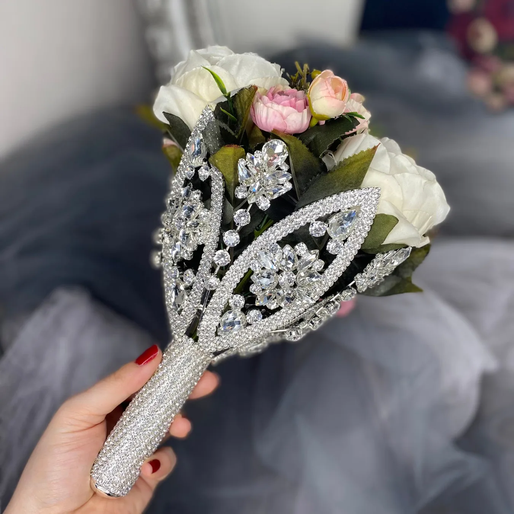
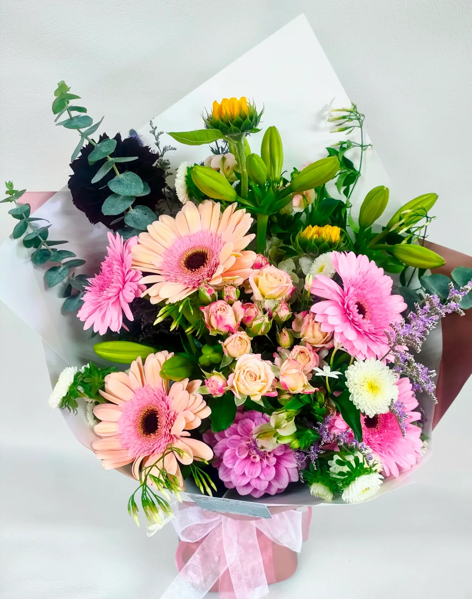

Our Services

Wedding and Event Flowers
We make bridal bouquets, bridesmaid bouquets, table flowers and venue arrangements.
Bridal bouquets from $180 | Bridesmaid bouquets from $110 | Table flowers from $95 each
Ask for a quote
Corporate Flowers
Flowers for offices, reception areas, meetings and business gifts. Regular arrangements from $120.
Ask for a quoteDelivery Information
We deliver to Central Auckland and selected suburbs including Ponsonby, Grey Lynn, Parnell, Newmarket, Mount Eden, Epsom and Remuera.
Delivery is generally Monday to Saturday. Please allow one working day's notice. Same-day delivery is not guaranteed. Delivery costs depend on location.
Frequently Asked Questions
Can I choose my flower colours?
Yes, depending on seasonal availability.
Can I pay online?
No. This website is for enquiries only.
How early should I enquire about a wedding?
As early as possible. For smaller events, please enquire at least three weeks ahead.